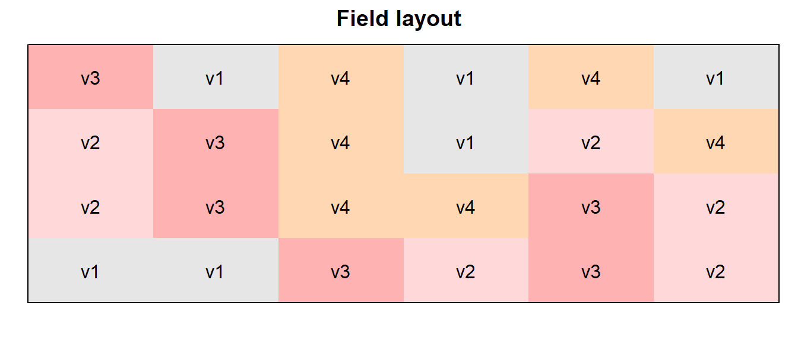
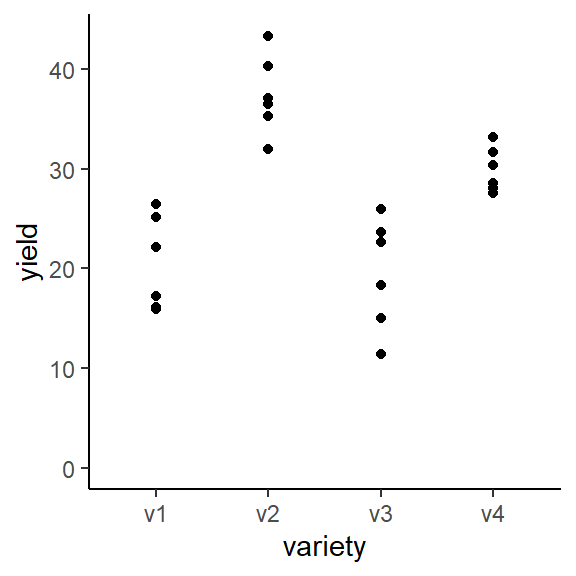
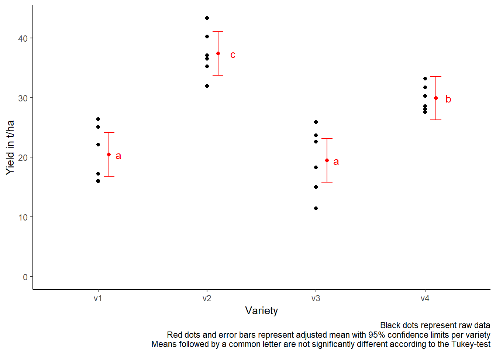

Completely randomized design
# packages
pacman::p_load(tidyverse, # data import and handling
conflicted, # handling function conflicts
emmeans, multcomp, multcompView, # adjusted mean comparisons
ggplot2, desplot) # plots
# conflicts between functions with the same name
conflict_prefer("filter", "dplyr")
conflict_prefer("select", "dplyr")Data
This example is taken from “Example 4.3” of the course material “Quantitative Methods in Biosciences (3402-420)” by Prof. Dr. Hans-Peter Piepho. It considers data published in Mead et al. (1993, p.52) from a yield trial with melons. The trial had 4 melon varieties (variety). Each variety was tested on six field plots. The allocation of treatments (varieties) to experimental units (plots) was completely at random. Thus, the experiment was laid out as a completely randomized design (CRD).
Import
# data (import via URL)
dataURL <- "https://raw.githubusercontent.com/SchmidtPaul/DSFAIR/master/data/Mead1993.csv"
dat <- read_csv(dataURL)
dat## # A tibble: 24 x 4
## variety yield row col
## <chr> <dbl> <dbl> <dbl>
## 1 v1 25.1 4 2
## 2 v1 17.2 1 6
## 3 v1 26.4 4 1
## 4 v1 16.1 1 4
## 5 v1 22.2 1 2
## 6 v1 15.9 2 4
## 7 v2 40.2 4 4
## 8 v2 35.2 3 1
## 9 v2 32.0 4 6
## 10 v2 36.5 2 1
## # ... with 14 more rowsFormatting
Before anything, the column variety should be encoded as a factor, since R by default encoded it as a character variable.
dat <- dat %>%
mutate_at(vars(variety), as.factor)Exploring
In order to obtain a field layout of the trial, we can use the desplot() function. Notice that for this we need two data columns that identify the row and column of each plot in the trial.
desplot(data = dat, flip = TRUE,
form = variety ~ col + row, # fill color per variety
text = variety, cex = 1, shorten = "no", # show variety names per plot
main = "Field layout", show.key = F) # formatting
We could also have a look at the arithmetic means and standard deviations per variety:
dat %>%
group_by(variety) %>%
summarize(mean = mean(yield),
std.dev = sd(yield))## # A tibble: 4 x 3
## variety mean std.dev
## <fct> <dbl> <dbl>
## 1 v1 20.5 4.69
## 2 v2 37.4 3.95
## 3 v3 19.5 5.56
## 4 v4 29.9 2.23We can also create a plot to get a better feeling for the data.
ggplot(data = dat,
aes(y = yield, x = variety)) +
geom_point() + # scatter plot
ylim(0, NA) + # force y-axis to start at 0
theme_classic() # clearer plot format 
Modelling
Finally, we can decide to fit a linear model with yield as the response variable and (fixed) variety effects.
mod <- lm(yield ~ variety, data = dat)ANOVA
Thus, we can conduct an ANOVA for this model. As can be seen, the F-test of the ANOVA finds the variety effects to be statistically significant (p<0.001).
mod %>% anova()## Analysis of Variance Table
##
## Response: yield
## Df Sum Sq Mean Sq F value Pr(>F)
## variety 3 1291.48 430.49 23.418 9.439e-07 ***
## Residuals 20 367.65 18.38
## ---
## Signif. codes: 0 '***' 0.001 '**' 0.01 '*' 0.05 '.' 0.1 ' ' 1Mean comparisons
Following a significant F-test, one will want to compare variety means.
mean_comparisons <- mod %>%
emmeans(specs = "variety") %>% # get adjusted means for varieties
cld(adjust="tukey", Letters=letters) # add compact letter display
mean_comparisons## variety emmean SE df lower.CL upper.CL .group
## v3 19.5 1.75 20 14.7 24.3 a
## v1 20.5 1.75 20 15.7 25.3 a
## v4 29.9 1.75 20 25.1 34.7 b
## v2 37.4 1.75 20 32.6 42.2 c
##
## Confidence level used: 0.95
## Conf-level adjustment: sidak method for 4 estimates
## P value adjustment: tukey method for comparing a family of 4 estimates
## significance level used: alpha = 0.05
## NOTE: Compact letter displays can be misleading
## because they show NON-findings rather than findings.
## Consider using 'pairs()', 'pwpp()', or 'pwpm()' instead.Note that if you would like to see the underyling individual contrasts/differences between adjusted means, simply add details = TRUE to the cld() statement. Also, find more information on mean comparisons and the Compact Letter Display in the separate Compact Letter Display Chapter
Present results
Mean comparisons
For this example we can create a plot that displays both the raw data and the results, i.e. the comparisons of the adjusted means that are based on the linear model. If you would rather have e.g. a bar plot to show these results, check out the separate Compact Letter Display Chapter
ggplot() +
# black dots representing the raw data
geom_point(
data = dat,
aes(y = yield, x = variety)
) +
# red dots representing the adjusted means
geom_point(
data = mean_comparisons,
aes(y = emmean, x = variety),
color = "red",
position = position_nudge(x = 0.1)
) +
# red error bars representing the confidence limits of the adjusted means
geom_errorbar(
data = mean_comparisons,
aes(ymin = lower.CL, ymax = upper.CL, x = variety),
color = "red",
width = 0.1,
position = position_nudge(x = 0.1)
) +
# red letters
geom_text(
data = mean_comparisons,
aes(y = emmean, x = variety, label = str_trim(.group)),
color = "red",
position = position_nudge(x = 0.2),
hjust = 0
) +
ylim(0, NA) + # force y-axis to start at 0
ylab("Yield in t/ha") + # label y-axis
xlab("Variety") + # label x-axis
labs(caption = "Black dots represent raw data
Red dots and error bars represent adjusted mean with 95% confidence limits per variety
Means followed by a common letter are not significantly different according to the Tukey-test") +
theme_classic() # clearer plot format 
Exercises
Exercise 1
This example is taken from “Example 5.4” of the course material “Quantitative Methods in Biosciences (3402-420)” by Prof. Dr. Hans-Peter Piepho. It considers data published in Mead et al. (1993, p.54). The percentage moisture content is determined from multiple samples for each of four different soils. Notice that for this dataset you have no information on any specific field trial layout (i.e. row or col column are not present in the dataset). Therefore you should skip trying to create a field layout with desplot() and instead focus on the following:
- Explore
- How many samples per soil were taken?
- Which soil has the highest value for moisture?
- Draw a plot with moisture values per soil
- Analyze
- Compute an ANOVA
- Perform multiple (mean) comparisons using the LSD test/t-test.
- Repeat the analysis, but this time remove all moisture values larger than 12 at the very beginning.
# data (import via URL)
dataURL <- "https://raw.githubusercontent.com/SchmidtPaul/DSFAIR/master/data/Mead1993b.csv"
ex1dat <- read_csv(dataURL)R-Code and exercise solutions
Please click here to find a folder with .R files. Each file contains
- the entire R-code of each example combined, including
- solutions to the respective exercise(s).
Please feel free to contact me about any of this!
schmidtpaul1989@outlook.com